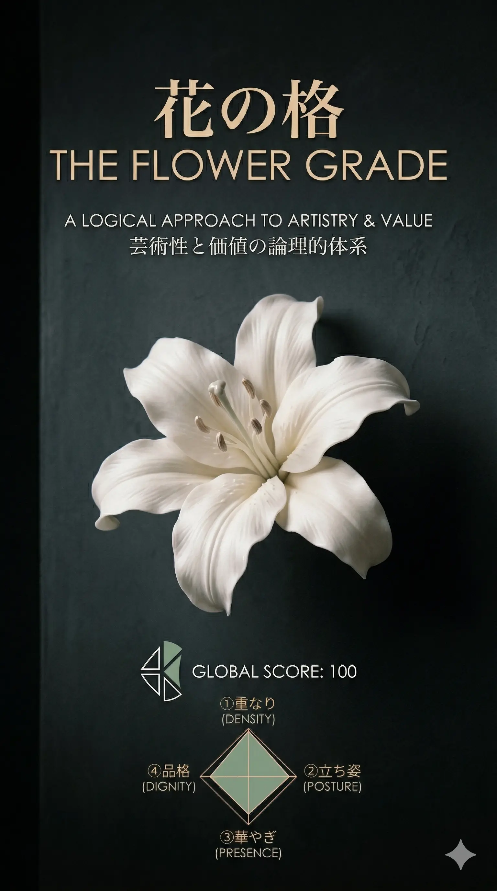
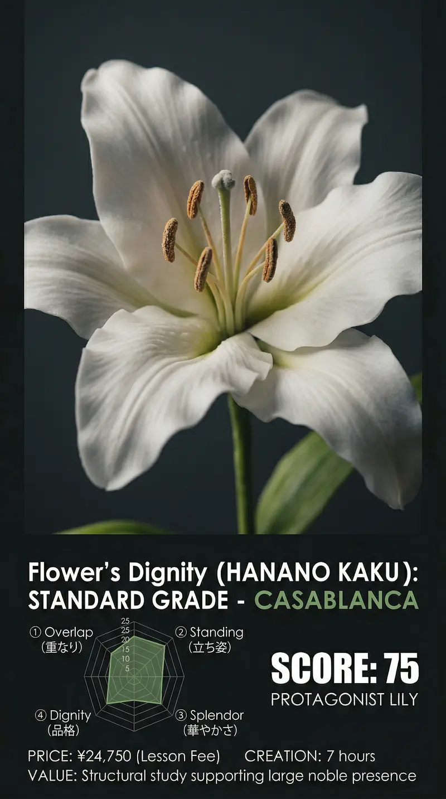
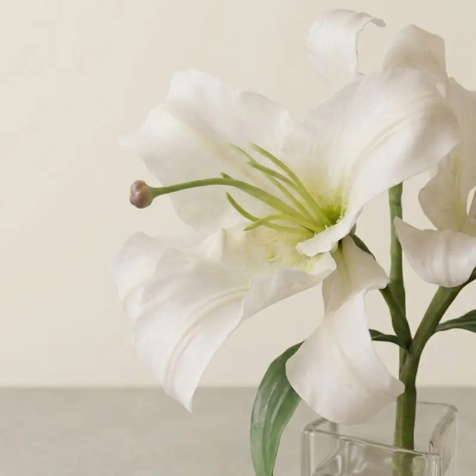
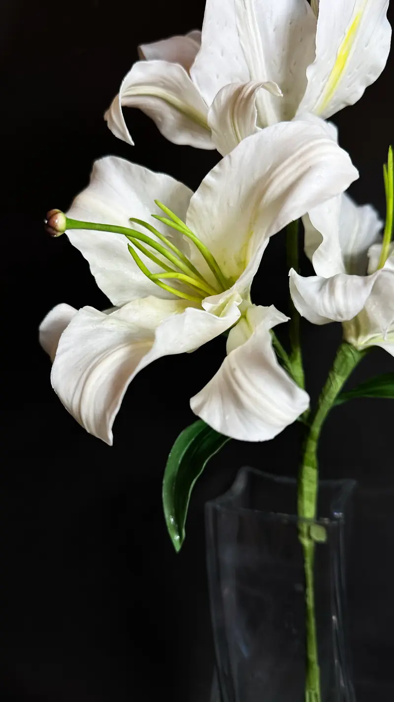
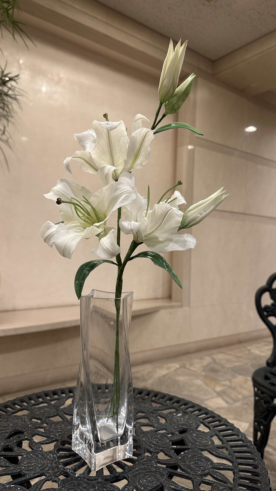
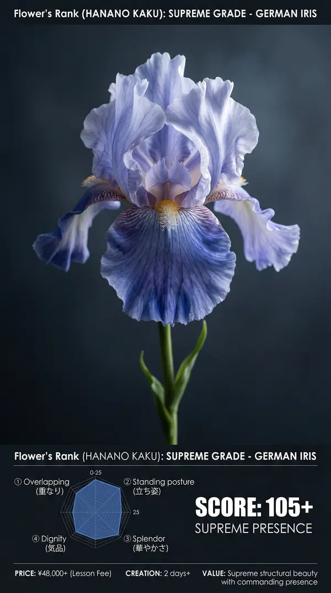
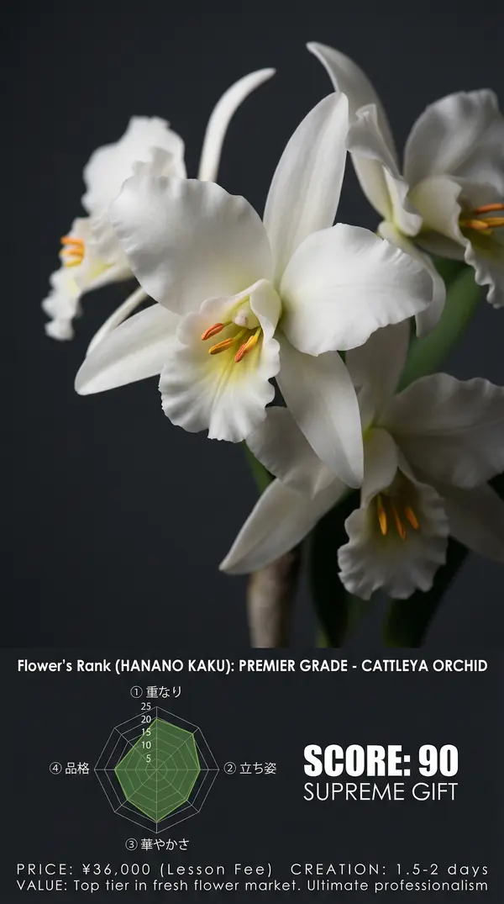
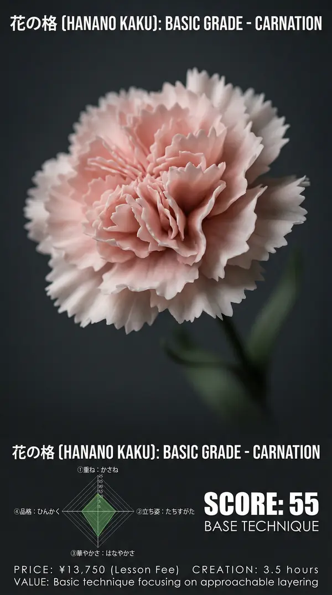
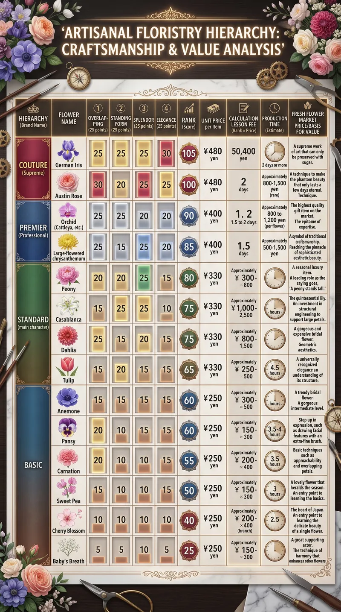

SUGAR FLOWER VALUE SYSTEM
感覚的な「美しさ」を、
「構造」と「市場価値」で数値化する。
CONCEPT
お花は、一輪だけで存在するものではありません。
花束やブーケ、リースといったアレンジメントの中で、
初めてその魅力が引き立ちます。
しかし、全てのお花が目立ってしまうと、
作品全体は調和を失い、まとまりがなくなります。
そこで重要になるのが、
「主役の花」と「それを引き立てる花」のバランス。
それぞれの花に役割を与え、全体を調和させる。
そのために「格」という共通の物差しが必要です。
あなたの作品が、より深い調和を生み出すために。
一輪の格を知ることが、
やがて作品全体の質を高めるのです。
WHY SCORING?
「作れる」と「選ばれる」の違い。
その差を分ける、客観的基準。
数値という基準があるから、
自分の上達を実感できます。
格を知れば、
迷わず価格を提示できます。
目指す先が見えれば、
効率的に上達できます。
VALUE SCORING
感覚的な「お花の美しさ」を、
丁寧な紐解きで可視化。

花びら一枚、一枚に込められる手の動き。
筆の入れ方、パーツの細かさ、重なり合う層。
そのすべてが「手仕事の密度」として現れ、
見る人の心に「丁寧さ」を伝えます。
例：カサブランカの花びらは 6 枚。
それぞれに微妙な曲線と厚みをつけ、
自然な重なりを表現します。

大きな花弁が重力に負けないのは、
見えない部分の設計があるからです。
ワイヤーの位置、角度、乾かし方。
そのすべてが「立ち姿」を創り上げます。
例：カサブランカの中心ワイヤーは、
花の重さを支える背骨の役割。
ここがズレると、花全体が崩れます。

その花があるだけで、周囲の空気が変わる。
視線が自然と吸い寄せられる。
それが「華やぎ」。
作品全体における「主役力」です。
例：ウェディングブーケに
カサブランカが一輪入るだけで、
全体がエレガントな印象に。

生花の世界での価格、希少性、ブランド。
それは客观的な「格」の証です。
その格を知り、表現できるようになること。
それがプロへの一歩目です。
例：カサブランカは生花で
1,000〜2,500 円。
その価値をシュガーで再現します。
FLOWER HIERARCHY
4 つの階層、16 種類の花卉。
それぞれの格と役割が、ここにあります。




THE THRESHOLD
カサブランカは、Standard レベルの「主役」の花。
この 75 点を超えることが、
「作品の中心」を張るための最低条件です。
YOUR JOURNEY
カサブランカを咲かせることは、
単なる技術の習得ではありません。
それは、作品という調和の中で、
自らの役割を全うする「格」を手にすること。
そして、誰かの特別な瞬間を、
心から輝かせる力をつけることです。
その一輪が、あなたの_next stage_を創ります。